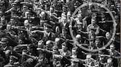
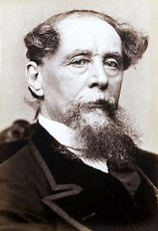
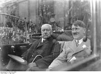
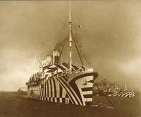
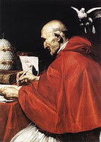
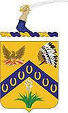
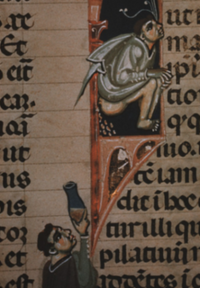
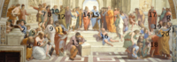

La foto de August Landmesser
2012-02-09T22:57:00.000+01:00

Ayer vi esta foto y me llamó la atención pero me pilló en mal momento. Esta mañana El Mundo publicaba un artículo al respecto de la foto y su historia, cuyo origen está en el blog Senrinomichi, y bien merece una curistoria.
El hombre de la foto, que no realiza el saludo nazi mientras lo hacen todas las personas a su alrededor, se llamaba August Landmesser y corría el año 1936. La imagen fue tomada durante la botadura de un buque alemán en Hamburgo, en cuyo astillero trabajaba nuestro protagonista. Entonces el nazismo estaba en pleno auge y mientras todos realizaban el saludo él se quedaba de brazos cruzados. Pero la historia no es tan sencilla como se podría imaginar. No sólo había falta de simpatía por el partido nazi en su gesto.
Landmesser había formado parte del partido nazi entre 1931 y 1935, pero fue expulsado del mismo por haberse casado con una judía, una mujer llamada Irma Eckler. Este amor no sólo le costó la expulsión del partido, sino que también le llevó a la cárcel “por deshonrar a la raza”. Irma, la mujer, también fue detenida por la Gestapo. Cuando Landmesser salió de la cárcel, en 1941, fue enviado al frente y poco después se le dio por muerto. Es una historia sencilla que explica una buena foto. Pero que ilustra lo que le pasó a multitud de personas en la Alemania de entonces. Una mancha de aceite se extendía sin remisión, el nazismo.
Al hilo de esta historia me permito recomendarles una novela, novela negra para más señas, que retrata bien cómo era la vida en Alemania en aquellos tiempos y cómo se perseguía y aislaba a los judíos, alejándolos de los trabajos, el deporte… convirtiéndolos en ciudadanos de segunda al fin y al cabo. La he leído recientemente y es una auténtica maravilla desde varios puntos de vista. Es una muy buena novela negra, retrata bien la persecución social contra los judíos y, además, es muy entretenida. Su título: Si los muertos no resucitan, y el autor es Philip Kerr. Recomendable.
Dickens autopublicó Un cuento de Navidad
2012-02-07T23:13:00.000+01:00

Como todos ustedes sabrán a estas alturas del día, Charles Dickens nació tal día como hoy, pero dos siglos atrás. Y podemos decir sin equivocarnos que su obra más conocida, influyente y famosa es “Un cuento de Navidad”. En nuestros días esta obra de Dickens está unida a la Navidad y la historia del fantasma de las navidades pasadas forma parte de la cultura popular.
Dickens escribió “Un cuento de Navidad” en tan sólo seis semanas, allá por 1843. En aquel momento Dickens había discutido con su editor por los exiguos ingresos que le había reportado su anterior novela: "Martin Chuzzlewit". En esa situación, Dickens rechazó una oferta por la novela, es decir, recibir un único pago por la misma y que esta fuera propiedad del editor. Dickens, como decía, rechazó la oferta y seguro de poder conseguir mayores beneficios, financió la publicación de la obra con sus propios fondos. Por decirlo de otro modo, Dickens se autopublicó “Un cuento de Navidad”.
Después de algunos problemas con la publicación, por fin la obra vio la luz a un precio de cinco chelines, lo que vendrían a ser algo así como veinticinco euros de hoy. A finales de año, de aquel 1843, se habían vendido seis mil copias del libro. El éxito continuó después de la Navidad y en mayo de 1844 se agotó la que ya era la séptima edición.
Voy a aprovechar esta historia de Dickens para recordarles que el libro de “Curistoria 2” está a la venta en formato electrónico en Amazon.es y Amazon.com y que también pueden adquirirlo en formato tradicional (además con 50% de descuento en el segundo ejemplar durante unos días), en papel. Ya saben, todos los beneficios del mismo van para Médicos Sin Fronteras. Por cierto, sin llegar al éxito de “Un cuento de Navidad”, aún, “Curistoria 2” ha estado en los días pasados entre los 100 libros electrónicos más vendidos en Amazon.es y alcanzó el cuarto puesto en la sección de historia.
Algunas curiosidades sobre Hitler
2012-02-05T23:03:00.002+01:00

Hitler es una de las personas del siglo XX sobre las que más se ha escrito, y hemos de asumir que muchas de las cosas que se han dicho puede que no sean del todo ciertas o hayan sido exageradas. Posiblemente algunas de las siguientes entren en esa categoría, a pesar de ya he filtrado por escepticismo algunas de ellas. ¡Ojo! No me estoy refiriendo a cuestiones del nazismo y sus acciones de guerra y exterminio, me refiero a manías personales y cosas así. En curistoria ya hemos contando algunas (aquí y aquí, por ejemplo). Y hoy vamos a dar otro repaso rápido al tema.
- En 1923, un asesor de imagen del partido nazi le indicó que debía afeitarse el bigote, o bien, dejárselo crecer con normalidad, tal y como lo hacía el resto de la gente. Hitler le contestó: “no se preocupe por mi bigote. Si no está a la moda actualmente, lo estará más tarde, sencillamente porque yo lo llevo así”.
- Al parecer no era extraño que después de un determinado tiempo en una reunión con amigos, o una cena, Hitler comenzara uno de sus extensos monólogos, ensayados todos ellos. Sus temas favoritos comenzaban con “cuando era soldado”, “cuando vivía en Viena”, “cuando estuve en prisión” y “cuando lideraba aquellos primeros días del partido”. Wagner y la ópera era otro de sus temas favoritos.
- No era aficionado en absoluto al deporte y una caminata era lo máximo que se podía esperar de él. No era extraño verlo caminar dentro de una habitación. Según parece, en lugar de dar vueltas a la misma, la cruzaba en diagonal, de manera constante. Y en ocasiones silbaba mientras lo hacía.
- En cambio, era muy aficionado al circo. Después de las funciones a las que asistía, enviaba caros chocolates y flores a las artistas. Pero, curiosamente, no le gustaban mucho las actuaciones con animales.
- También le gustaba el cine, y casi todas las noches veía una película en su sala de proyecciones privada. Algunas de aquellas películas habían sido prohibidas en Alemania por su propio partido. Veía con interés los noticiarios, que además solía protagonizar.
Fuente: Uncle Johns Supremely Satisfying Bathroom Reader
El otro atentado contra Kennedy
2012-02-02T23:15:00.000+01:00
Todos sabemos que John F. Kennedy acabó sus días en un atentado en Dallas, el 22 de noviembre de 1963. Pero antes de aquel día ya hubo otros hombres dispuestos a acabar con el presidente de EEUU a través de un atentado. Tres años antes, un cartero retirado de New Hampshire, planeó acabar con Kennedy, entonces recién elegido presidente. Las elecciones se habían celebrado el 8 de noviembre de 1960 y lo que voy a narrarles ocurrió en diciembre de aquel mismo año.
Después de las elecciones, Pavlick dejó el lugar en el que vivía en su coche, un Buick de 1950. Pocos días después envió una postal a un viejo amigo, comentándole que pronto oiría hablar de él, con grandes noticias. Aquella postal fue seguida por otras, del mismo tipo. Murphy, el amigo de Pavlick que las recibía, se dio cuenta que los lugares desde los que iban llegando habían sido visitados por Kennedy en los días de envío de dichas postales. Puso estos detalles en conocimiento de la policía local y el tema acabó en las manos del servicio secreto. Después de algunas entrevistas e investigaciones, descubrieron que Pavlick había comprado dinamita, lo que disparó las alarmas.
Pavlick estaba persiguiendo a Kennedy, vigilándolo en la medida de sus posibilidades. El 11 de diciembre, domingo, poco antes de las diez de la mañana, Pavlick esperaba dentro de su coche, cargado de dinamita, a que llegara el momento de poner su plan en marcha. Su objetivo era estrellar su propio coche contra el de Kennedy y que todo volara por los aires, él incluido. Cuando llegó el momento Pavlick vio que el presidente iba acompañado por su esposa, Jacqueline, y por sus dos hijos, y decidió posponer el atentado.
Cuatro días después, el 15 de diciembre, en Palm Beach, un oficial de policía descubrió el coche de Pavlick, que entonces era buscado ya por las fuerzas de seguridad, y arrestó a aquel cartero retirado, antes de que acabara con el presidente Kennedy. Pocos días antes había tenido su oportunidad, había estado realmente cerca de acabar con el presidente.
En enero de 1961 Pavlick ingresó en un hospital mental, siendo acusado de querer atentar contra la vida del presidente. En diciembre de 1963, diez días después de que otro hombre atentara, con éxito, contra Kennedy, Pavlick quedó libre de cargos. Según el juez, no era capaz de diferenciar entre el bien y el mal en sus acciones, al no tener sus facultades mentales en buen estado. Su vida, hasta 1975, cuando murió, fue una secuencia de hospitales.
Gracias a Dios, sus facultades mentales, dañadas, brillaron aquel día en el que decidió no volar el coche de Kennedy porque sus hijos y su esposa viajaban con él. Eso salvo la vida de todos, incluido Pavlick, y permitió al presidente vivir algunos años más, aunque acabara tristemente su días cuando otro hombre, Lee Harvey Oswald, sí llevo su plan hasta las últimas consecuencias.
Barcos camuflados como cebras
2012-01-31T22:55:00.002+01:00

Durante la Primera Guerra Mundial se comenzaron a camuflar barcos para que no fueran fácilmente distinguibles en el océano, y se consiguió en cierta medida siempre que el enemigo fuera un barco convencional, ya que desde los submarinos los barcos se recortaban claramente en el horizonte y eran fácilmente detectables, haciendo aquel primer camuflaje inútil.
Para evitar a este segundo enemigo, los submarinos, se decidió pintar los barcos de un modo extraño. Ya que no se podían ocultar a la vista, al menos se buscaría hacer el objetivo menos sencillo de abatir para los U-Boote. Se pintaban los barcos con unos patrones tan extravagantes que conseguían crear una ilusión óptica que evitaba al enemigo determinar con exactitud y facilidad cuál era el curso de la nave. En 1917 estaba planeado pintar toda la flota mercante y parte de la flota de guerra.
Los diseños fueron creados por la Royal Academy de Londres, bajo la supervisión de Norman Wilkinson, creador de la idea. Los dibujos, además de bloques y líneas de colores, incluían en ocasiones puentes y anclas. Un ejemplo más de cómo una idea en principio sencilla sirve para un gran propósito: pintar un barco de tal modo que la visión del mismo distorsione la realidad y confunda al enemigo al moverse, evitando que este determine con exactitud la velocidad y el rumbo del barco camuflado. Esto mismo, según parece, es lo que consiguen las cebras con sus rayas blancas y negras cuando huyen a la carrera de un depredador.
Fuente: La Primera Guerra Mundial, de H.P. Willmott
Por qué el Papa firma "siervo de los siervos de Dios"
2012-01-29T21:52:00.000+01:00

A finales del siglo VI, en Constantinopla había un patriarca conocido como Juan “El Ayunador”, que ayunaba frecuentemente y daba numerosas limosnas. Pero este virtuoso hombre tenía un defecto: el orgullo. Y el orgullo era el que le hacía tener envidia del jefe supremo de la Iglesia, el Papa de Roma, en aquel momento, Gregorio I. Un día le dijo Juan “El Ayunador” a un legado del Santo Padre:
―¿Por qué ha de ser Gregorio jefe de la Iglesia? Constantinopla es una ciudad más grande que Roma y el emperador habita en ella. Puesto que es la sede del imperio, debiera ser también la del jefe de la Iglesia. En realidad, el Papa debería ser yo.
Al enterarse el Papa de aquellas palabras comentó:
―Juan tiene apariencia de un dulce cordero, pero esconde dientes de lobo.
Y el Papa no iba desencaminado en su afirmación. Es cierto, como decía Juan, que Constantinopla era el Imperio, y por lo tanto ser su patriarca era un cargo importante, pero el no ser Papa martirizaba a nuestro Ayunador. Tal es así, que un día tuvo la desfachatez de enviar una carta al Papa firmando como “Juan, obispo de toda la tierra, es decir, jefe de toda la Iglesia”.
El Papa Gregorio, que sería santo más tarde, se tenía a sí mismo como jefe de la Iglesia, como efectivamente era por ser sucesor de san Pedro en Roma. Pero en la contestación, aún siendo severo, no quería entrar en una lucha de egos con Juan y decidió recordarle al patriarca de Constantinopla “que los jefes de la Iglesia no son como los reyes de la naciones, que reclaman grandes honores y fomentan los celos de los orgullosos. Lo que dice el Evangelio es que el jefe de la Iglesia, más que ningún otro obispo, es el servidor de los cristianos”. Escribió su respuesta el Papa y firmó aquella carta como “Gregorio, siervo de los siervos de Dios”. Y desde entonces, todos los Papas han seguido firmando como el Papa Gregorio I, como san Gregorio.
Fuente: Mis anécdotas preferidas, de Carlos Fisas
Lemas de algunas unidades militares (II)
2012-01-24T23:02:00.006+01:00

Hace casi cuatro años escribí una entrada repasando los lemas de algunas unidades militares. Poco a poco, han ido ustedes poniendo en los comentarios de esa entrada algunos otros lemas, y creo que es hora de hacer una segunda tanda, a partir de esos comentarios. Allá va la lista, como digo, con ustedes como fuente principal.
- Tercio de La Legión: “Legionarios a luchar, legionarios a morir”.
- SAR (Servicio Aéreo de Rescate): “Colabora con el SAR. Piérdete”.
- Armada de Chile y frase espartana: “Vencer o Morir”.
- 101 Aerotransportada: “Encuentro con el destino”. En Normandía: “Desde el cielo al infierno”.
- 111 Escuadrón de Mirage III (base en Manises, Valencia): “Excrementa edit Iacet semel pro anno et Tamen Irridet” (come carroña, copula una vez al año y todavía se ríe) Esta traducción no literal acompaña en el emblema a una insignia y la frase describe la vida de la hiena.
- PCMA (Parque Central de Material de Automoción, Madrid): “Lo que no es ciencia es magia, lo que no es magia es ciencia”.
- Batallón de Infantería 14 (paracaidista, Uruguay): “Somos lo último que verás”.
- Navy Seals (operaciones especiales EEUU): “El día más fácil fue el de ayer”.
- Fuerzas Especiales de Guatemala: “Si avanzo, sígueme. Si me detengo, aprémiame. Si retrocedo, mátame”.
- Del ejército colombiano: “El entrenamiento será tan fuerte que la guerra será un descanso”.
- Artillería de Colombia: “Deber antes que vida”.
- Infantería de Colombia: “Paso de vencedores”.
- Comandos de Colombia: “Lealtad, valor y sacrificio”.
Y por último, un capricho propio:
- Séptimo de Caballería de los EEUU: “The seventh first” (El Séptimo primero)
Leer en el baño, una costumbre antigua
2012-01-22T22:49:00.000+01:00

Hace unos días les contaba una historia sobre Theodore Roosevelt que tenía como moraleja que siempre se podía encontrar un hueco para leer. Aquella historia tenía como fuente la columna de Andrew Sullivan en The Daily Beast y me la había renviado Miguel Álvarez, como otras tantas veces. Hoy, también ha sido Miguel el que me envía esta curistoria (gracias) y la fuente final también es Andrew Sullivan. Y, para cerrar el círculo, la temática también tiene que ver con la lectura.
Sullivan cita un trabajo de Ian Sample en el que este explora los orígenes de la lectura en al baño, ya me entienden, no entraré en más detalles. Según parece, el autor anónimo de “La vida de san Gregorio” no puedo evitar hacer mención a cómo el lugar en el que uno podía sentarse a evacuar, allá en lo alto de la torre, ofrecía la tranquilidad y la soledad perfecta para una lectura sin interrupciones. Según Sample, un tal lord Chesterfield también celebraba los beneficios de la costumbre de leer en el baño, narrando la historia de un hombre que leía a Horacio aprovechando sabiamente el tiempo que empleaba en los menesteres de evacuación del cuerpo.
Y estos lejanos y medievales tiempos no son más que el comienzo, si no había comenzado ya esta costumbre siglos antes. Más cercano nos cae Henry Miller, que según parece también era aficionado a unir lectura y lavabo y que llegaba a decir que algunas obras, como el Ulises de Joyce, no pueden ser apreciadas en su totalidad si no era allí sentado.
No negaré que esta última frase en la que dice Miller que el Ulises sólo se disfruta al ciento por ciento en el baño, mientras se obra (nunca sé qué verbo usar para estas cosas), me ha tentando para hacer algunos chistes al respecto, pero me los guardaré.
Fuente: Andrew Sulivan en The Daily Beast
Una vieja historia de poker
2012-01-20T14:00:00.000+01:00
La historia del poker está repleta de episodios interesantes. Quizás uno de los más curiosos es el de la partida de poker que se jugó en la década de los cuarenta entre Ray Ryan y Nick "El Griego". Aquel suceso fue portada de revistas y periódicos en los Estados Unidos durante una década.
Ray Ryan era un conocido y afortunado hombre de negocios californiano, que allá por el año de 1949 desafió al poker al conocido jugador y apostador griego Nick "The Greek" Dandolos. El trato era jugar durante un día entero al viejo estilo. No hace falta ni comentar que aún no existía la comodidad de jugar al poker online, y se planteó un reto de veinticuatro horas jugando al poker abierto. Ryan no debía ser demasiado escrupuloso y, gracias a sus contactos y poderío económico, fue capaz de trucar todo aquel tinglado a su favor, engañando al viejo Greek y embolsándose más de medio millón de dólares de aquella época. Pero claro, Nick "El Griego" no era un tonto precisamente. Ryan no había calibrado bien la magnitud de su estafa y tampoco las desastrosas consecuencias del affaire.
Dandolos pidió ayuda a un viejo conocido, Sam Giancana, muy relacionado con el crimen organizado, quien envió un recado al bronceado y millonario jugador californiano para que devolviera toda la pasta que se había llevado de forma no demasiado honesta, cosa a la que naturalmente este se negó. Al poco tiempo, Ryan fue víctima de un intento de secuestro. Se escapó por poco. Dandolos fue acusado junto a los otros colaboradores necesarios del crimen y pasó un tiempo ente rejas, siendo liberado al poco tiempo. Ya en 1977, Ray Ryan fue asesinado con una bomba colocada en los bajos de su coche, se supone que por alguno de sus socios. Si los protagonistas de esta bonita historia hubieran tenido la posibilidad de jugar al texas holdem online otro gallo hubiera cantado…más tranquilo es, desde luego.
Entrada escrita por r.- para Curistoria
La Escuela de Atenas, de Rafael
2012-01-18T23:55:00.002+01:00
El artista renacentista Rafael Sanzio, es uno de los más reconocidos de aquel tiempo y será nuestro protagonista de hoy por el trabajo hecho en “La escuela de Atenas”, obra pintada a comienzos del siglo XVI.
Sus dimensiones son considerables: casi ocho metros de largo por cinco de alto. Y su tema no es otro que la filosofía griega, ya que representa una sesión de trabajo idílica de los más grandes pensadores, científicos y matemáticos clásicos. Lo que siempre me ha llamado la atención de esta obra, que está en mi cabeza, curiosamente, desde que era un mozalbete, es que se sepa quién es cada cual y además se descubran un buen número de detalles, guiños e indicaciones que dejó el autor. Aunque, como pueden comprobar al final de la entrada, en muchos casos se especula con el filósofo representado, sin que esté claro.
Platón y Aristóteles ocupan el punto central, el centro de la composición. Pero también está Sócrates, Heráclito (con la cara de Miguel Ángel y algún detalle más que delatan el homenaje de Rafael a su compañero de gremio) o Hipatia deAlejadría. Las caras de estos filósofos están tomadas en algunos casos de personajes más o menos conocidos de la época. Platón apunta al cielo, a su mundo de las ideas. En cambio, Aristóteles, a su lado, hace un gesto más pegado al mundo terrenal.
Por cierto, la portada del disco "Use your illusion" de Guns N’ Roses, uno de los mejores de la banda y con temas memorables, es un fragmento de esta obra.
Aquí les dejo la imagen del cuadro con la lista de personajes que representa.

1: Zenón de Citio o Zenón de Elea – 2: Epicuro – 3: Federico II Gonzaga – 4: Boecio o Anaximandro o Empédocles – 5: Averroes – 6: Pitágoras – 7: Alcibíades o Alejandro Magno – 8: Antístenes o Jenofonte – 9: Hipatia (pintada como Margherita o el joven Francesco Maria della Rovere) – 10: Esquines o Jenofonte – 11:Parménides – 12: Sócrates – 13: Heráclito (pintado como Miguel Ángel) – 14: Platón sosteniendo el Timeo (pintado como Leonardo da Vinci) – 15: Aristótele ssosteniendo la Ética – 16: Diógenes de Sinope – 17: Plotino – 18: Euclides o Arquímedes junto a un grupo de estudiantes (pintado como Bramante) – 19: Estrabón o Zoroastro? – 20: Claudio Ptolomeo – R: Apeles como Rafael – 21: Protógenes como El Sodoma.